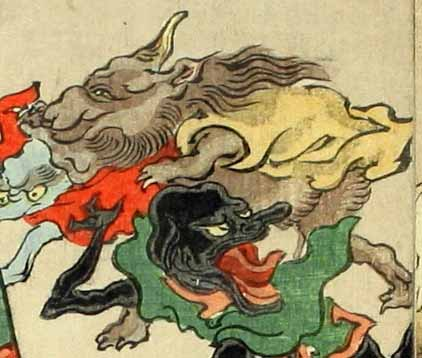

猪のような顔をした茶色の化物。顎ひげを生やし、後頭部からたてがみのような長い毛をなびかせ、大きな耳をしている。体にも毛が生えていて、黄色い上着のようなものを身につけている。
著作者：洒落斎芳幾（歌川芳幾）／出典：親書誌：U426_nichibunken_0075：滑稽倭日史記；コッケイヤマトシキ／日付：2007／資源識別子：U426_nichibunken_0075_0030_0000
Copyright (c)2010- International Research Center for Japanese Studies, Kyoto, Japan. All rights reserved.